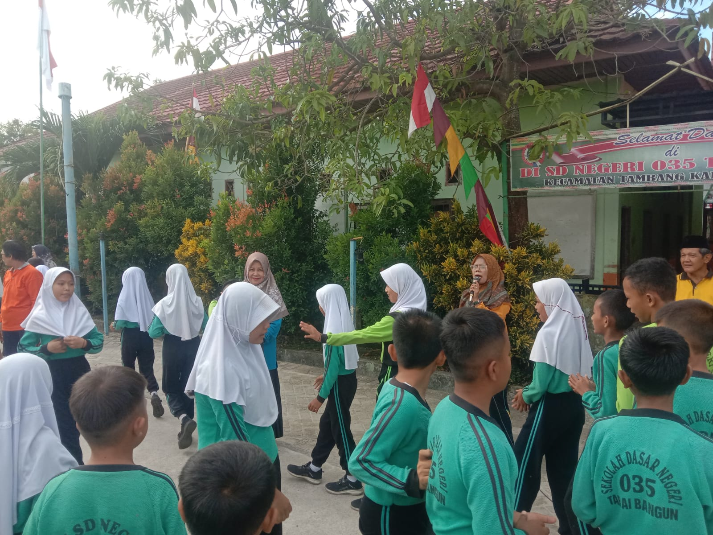

==================
Perpisahan Purna Bakti Ibu Nurmaini

Perpisahan Purna Bakti Ibu Nurmaini merupakan momen yang penuh haru dan rasa terima kasih. Selama 39 Tahun mengabdi sebagai pendidik, Ibu Nurmaini telah memberikan dedikasi luar biasa dalam membimbing siswa dengan penuh kasih sayang dan kesabaran. Seluruh keluarga besar sekolah mengungkapkan rasa terima kasih yang mendalam atas segala ilmu dan pengalaman yang telah beliau bagikan. Meskipun kini Ibu Nurmaini memasuki masa pensiun, jejak kebaikan dan pengabdiannya akan selalu dikenang. Perpisahan ini bukanlah akhir, melainkan awal dari perjalanan baru yang penuh kebahagiaan dan kesuksesan. Semoga Ibu Nurmaini selalu diberkahi dan bahagia di setiap langkah hidupnya.